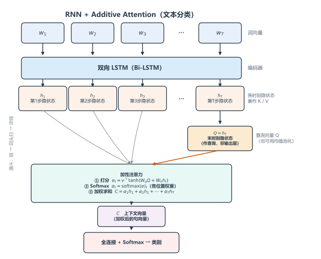
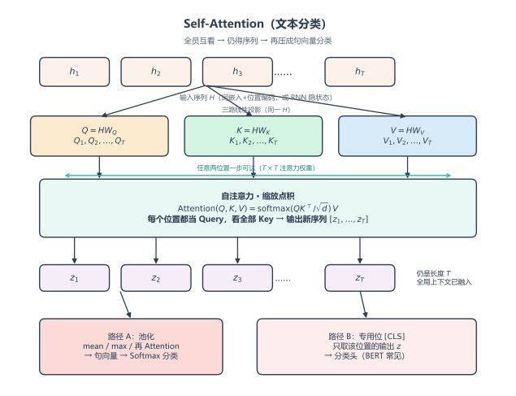

RNN + Attention 文本分类
核心思想
文本分类只需给整句贴一个标签，因此目标只有一件事：用 Attention 把变长句子压成一个固定长度、带重点的句向量，再交给全连接层分类。
与翻译不同：这里没有逐步变化的解码器，Attention 只算一次。本节模型用的是 Additive Attention（加性注意力）。
完整实验：code_demo/RNN_attention/（说明见同目录 实验.md）。数据为 AG News 小型子集（4 类多分类）。setting.ATTN_TYPE 可切 additive / scaled_dot / self：
cd code_demo/RNN_attention
python train.py
模型长什么样：RNN + 加性注意力

像一个「漏斗」：RNN 先拉出一条长链，再从末尾揪出一个「头」（Q），用加性打分回头扫描整条链，浓缩成一个精华向量，喂给分类器。
- 输入：一句话的词向量
- RNN（双向 LSTM）：过一遍，输出每个时刻的隐状态 ——这就是「候选信息库」，同时充当 K 和 V。
- 生成 Q：取最后一个时刻 （或对所有时刻取平均）作为查询向量——代表「我现在要看全貌了」。
- 加性打分：对每个位置 ，不直接点积，而是
- 加权汇总：，上下文向量 。
- 分类：把 （有时拼接上 Q）送入 Softmax 全连接层，输出类别。
对应实现（model.py，ATTN_TYPE="additive"）：
class AdditiveAttention(nn.Module):
"""e_t = v^T tanh(W_q Q + W_h h_t)，再 Softmax 加权求和。"""
def __init__(self, hidden_dim: int):
super().__init__()
self.W_q = nn.Linear(hidden_dim, hidden_dim, bias=False)
self.W_h = nn.Linear(hidden_dim, hidden_dim, bias=False)
self.v = nn.Linear(hidden_dim, 1, bias=False)
def forward(self, query, keys, mask=None):
# query: (B, H) keys: (B, T, H)
q = self.W_q(query).unsqueeze(1) # (B, 1, H)
h = self.W_h(keys) # (B, T, H)
scores = self.v(torch.tanh(q + h)).squeeze(-1) # (B, T)
if mask is not None:
scores = scores.masked_fill(~mask, -1e9)
alpha = torch.softmax(scores, dim=-1) # (B, T)
context = torch.bmm(alpha.unsqueeze(1), keys).squeeze(1) # (B, H)
return context, alpha
class BiLSTMAttnClassifier(nn.Module):
"""BiLSTM + 一次 Attention → 句向量 → 分类。"""
def forward(self, input_ids, lengths):
emb = self.embedding(input_ids)
packed = nn.utils.rnn.pack_padded_sequence(
emb, lengths.cpu(), batch_first=True, enforce_sorted=False
)
packed_out, _ = self.lstm(packed)
H, _ = nn.utils.rnn.pad_packed_sequence(packed_out, batch_first=True) # (B, T, 2H)
# Q = 末有效时刻 h_T；K/V = 整句隐状态 H
last_idx = (lengths - 1).clamp(min=0)
batch_idx = torch.arange(H.size(0), device=H.device)
query = H[batch_idx, last_idx]
mask = torch.arange(H.size(1), device=H.device).unsqueeze(0) < lengths.unsqueeze(1)
context, alpha = self.attn(query, H, mask=mask)
sent = self.dropout(torch.cat([context, query], dim=-1)) # 拼接 C 与 Q
return self.fc(sent), alpha
缩放点积注意力
加性注意力用一层小网络打分；缩放点积则更省事——直接拿 Q 和 K 做点积，再除以 ：
为什么要除 ：维度一高，点积方差约等于 ，分数容易炸，Softmax 接近 one-hot，梯度变差。除以 把尺度拉回温和区间。
落到本文的分类设定里，也可以把加性换成缩放点积：
- K、V：仍是各时刻隐状态 （拼成矩阵 ）。
- Q：仍是 （或均值）经线性变换得到。
- 打分：，再 Softmax 得 ，。
- 分类：同前，把 送入全连接层。
与加性比：无需额外的 打分网络，矩阵乘法即可；维度高时通常更稳、更快。Transformer 里用的就是这一套。
分类器骨架不变，只换打分模块（ATTN_TYPE="scaled_dot"）：
class ScaledDotProductAttention(nn.Module):
"""Attention(Q,K,V) = softmax(Q K^T / sqrt(d)) V，此处单 Query。"""
def __init__(self, hidden_dim: int):
super().__init__()
self.W_q = nn.Linear(hidden_dim, hidden_dim, bias=False)
self.scale = math.sqrt(hidden_dim)
def forward(self, query, keys, mask=None):
# query: (B, H) keys/values: (B, T, H)
q = self.W_q(query).unsqueeze(1) # (B, 1, H)
scores = torch.bmm(q, keys.transpose(1, 2)).squeeze(1) / self.scale # (B, T)
if mask is not None:
scores = scores.masked_fill(~mask, -1e9)
alpha = torch.softmax(scores, dim=-1)
context = torch.bmm(alpha.unsqueeze(1), keys).squeeze(1)
return context, alpha
自注意力
前面的 Q 来自「句末一个向量」，K/V 来自「整句各位置」——是一个 Query 对一串 Key。

自注意力（Self-Attention）换一种问法：让每个位置都当一次 Query，去看整句所有位置（含自己）。也就是同一组向量既当 Q，也当 K、V：
输出仍是长度 的序列，但每个位置的新表示已经掺入了全局上下文。
用于分类时常见两条路：
- 池化：对自注意力输出做平均 / max / 再 Attention 压成一个句向量，再分类。
- 专用位：像 BERT 那样在句首加
[CLS]，只取该位置的输出做分类头。
要点：自注意力不依赖 RNN 的逐步传递，任意两词之间一步可达；前面「RNN + 一次 Attention」是「先串行编码、再一次汇总」，自注意力则是「位置之间直接互看」。
实验走路径 A（均值池化，ATTN_TYPE="self"）：
class SelfAttention(nn.Module):
"""每个位置都当 Query：Q=HW_Q, K=HW_K, V=HW_V，输出仍为序列。"""
def forward(self, x, mask=None):
# x: (B, T, H)
q, k, v = self.W_q(x), self.W_k(x), self.W_v(x)
scores = torch.bmm(q, k.transpose(1, 2)) / self.scale # (B, T, T)
if mask is not None:
scores = scores.masked_fill(~mask.unsqueeze(1), -1e9)
alpha = torch.softmax(scores, dim=-1)
if mask is not None:
alpha = alpha * mask.unsqueeze(-1).float()
return torch.bmm(alpha, v), alpha # (B, T, H)
class SelfAttnClassifier(nn.Module):
"""Embedding → Self-Attention → 均值池化 → 分类。"""
def forward(self, input_ids, lengths):
emb = self.embedding(input_ids) # (B, T, D)
mask = torch.arange(emb.size(1), device=emb.device).unsqueeze(0) < lengths.unsqueeze(1)
z, alpha = self.self_attn(emb, mask=mask)
mask_f = mask.unsqueeze(-1).float()
sent = (z * mask_f).sum(dim=1) / lengths.unsqueeze(1).clamp(min=1).float()
return self.fc(self.dropout(sent)), alpha